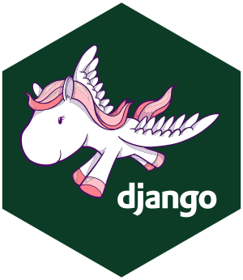
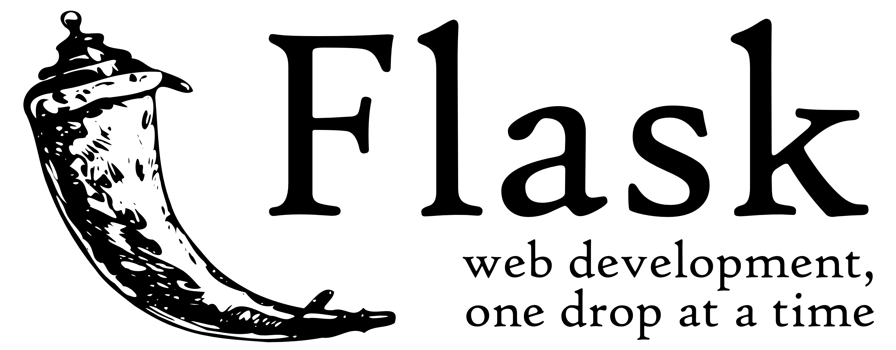
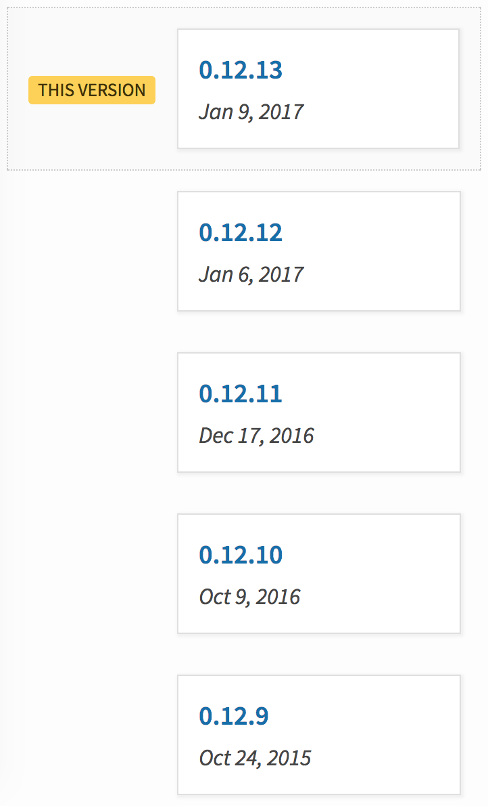
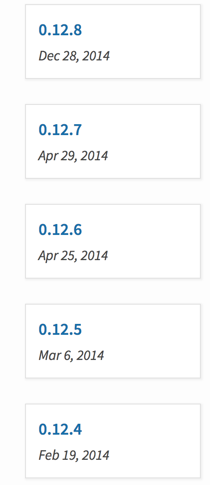

Python Web Frameworks in the Age of Microservices
Old Faithful
Photo by Emily Campbell on Unsplash
Django

Flask

Road Less Traveled
Photo by Gabriel Garcia Marengo on Unsplash
Bottle
Bottle


Falcon

Hug
API Star
🌟
Roundup
Photo by Erlend Ekseth on Unsplash
|
stable |
docs |
speed |
async* |
py2 |
mascot |
| Django |
👌 |
👌 |
👎 |
👎 |
⛔ ** |
😊 |
| Flask |
👍 |
👍 |
🤞 |
👎 |
✅ |
😑 |
| Bottle |
👍 |
👍 |
👍 |
👎 |
✅ |
😑 |
| Falcon |
👍 |
👍 |
👌 |
👎 |
✅ |
😲 |
| Hug |
🤞 |
👎 |
👌 |
👍 |
⛔ |
😍 |
| Sanic |
👎 |
👍 |
👍 |
👍 |
⛔ |
derp |
| Apistar |
🖕 |
👍 |
👍 |
👍 |
⛔ |
🤔 |
* out of the box
** not since 2.0 👏